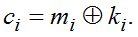
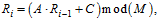
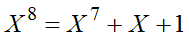
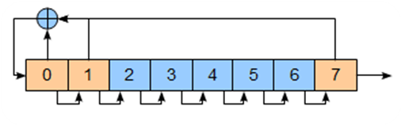
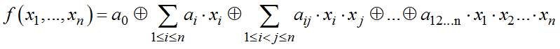
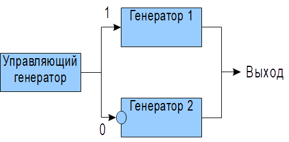
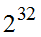

Поточные шифры − это симметричные алгоритмы шифрования, обрабатывающие входные данные по одному символу, причем результат шифрования зависит не только от установленного ключа, но и от текущего состояния алгоритма шифрования, имеющего элементы памяти. Наиболее часто используются символы длиной 1, 8, 16, 32 и 64 бита.
Фундаментальное отличие поточных шифров от блочных − это наличие элементов памяти, от которых зависит результат шифрования. Вследствие этого, шифрование одинаковых символов с помощью поточных шифров, дает на выходе различные символы шифртекста, тогда как блочные шифры дают одинаковые.
Мощный импульс популярности и развитию поточных шифров дала работа Клода Шеннона, посвященная анализу одноразовых блокнотов. Одноразовый блокнот содержит длинную последовательность ключевых бит, выбираемых совершенно случайно и называемых гаммой. Шифртекст получается следующим образом:  Гамма побитно (по модулю 2) складывается с открытым текстом, причем каждый бит гаммы используется только один раз.
Шеннон доказал, что такой шифр является совершенным, т. е. не может быть вскрыт даже при наличии неограниченного объема вычислительных ресурсов у криптоаналитика. Свойство абсолютной стойкости достигается благодаря отсутствию какого-либо критерия, по которому один открытый текст может быть отличен от другого. Основным недостатком такого метода является необходимость использования большого объема случайной гаммы, по сути являющейся ключом, длинна которого равняется объему теста, подлежащего шифрованию. Фактически поточный шифр пытается сохранить преимущество одноразового блокнота, используя короткий ключ для выработки псевдослучайной гаммы. То есть, поточные шифры работают в режиме генерации большого объема псевдослучайной ключевой последовательности, которая складывается с открытым текстом для получения шифртекста. Поточные шифры могут быть более быстрыми чем блочные шифры, кроме этого, гамма может генерироваться независимо от шифруемых данных и тогда операция шифрования сводится к простому сложению по модулю 2 открытого текста и гаммы, что является теоретическим пределом скорости шифрования.
Последовательность (гамма), порождаемая поточным шифром, не должная иметь статистических отклонений при проверке различными тестами и описываться простыми математическими конструкциями. Рассмотрим элементы, которые могут быть использованы с составе блочного шифра. На начальном этапе развития криптографии в качестве генераторов гаммы использовались линейно-конгруэнтные генераторы и регистры сдвига с линейной обратной связью. В настоящее время эти операции в чистом виде не используются, так как они описываются линейными уравнениями и легко могут быть вскрыты.
Являются семейством псевдослучайных функций, которые описываются рекуррентным соотношением

где A, C, M – константы.
При правильном выборе параметров алгоритма такие генераторы имеют большой период и хорошие статистические свойства, легко реализуются программно.
Состоят из n ячеек, имеющих вход и выход. На каждом такте выполняется сдвиг содержимого регистра от младших бит к старшим, при этом самый старший бит является выходным значением, а значение самого младшего бита определяется функцией обратной связи. В качестве функции обратной связи используется сумма по модулю 2 некоторых бит регистра. При выборе бит обратной связи, соответствующих коэффициентам неприводимого полинома степени n, такой регистр порождает последовательность с максимальным периодом. Легко реализуются аппаратно и имеют не сложную программную реализацию. Пример регистра сдвига с обратной линейной связью, соответствующего полиному , приведен на рис. 4.29. Существуют также регистры сдвига с нелинейной обратной связью, но они обычно используются совместно с регистрами сдвига с линейной обратной связью, так как их поведение пока недостаточно изучено.
 |
Рис. 4.29. Пример регистра сдвига с линейной обратной связью |
Булевы функции − достаточно важный элемент в создании алгоритмов шифрования. Это функции вида
,
обладающие специальными свойствами.
Этими свойствами являются:
− сбалансированность;
− нелинейность;
− корреляционная устойчивость;
− алгебраическая устойчивость.
Булевы функции имеют важное значение в криптографии. Они используются для тестирования подстановок, и, теоретически, с их помощью, можно описать любой элемент или операцию. Так, например, весь блочный шифр соответствует набору булевых функций.
Подстановки и перестановки − операции, аналогичные используемым при построении блочных шифров.
Существует несколько подходов к построению поточных шифров с использованием рассмотренных примитивов. Первый из них − это использование комбинации нескольких более простых генераторов с помощью некоторой нелинейной функции, они могут быть построены как с использованием памяти, так и без нее. В качестве примитивов могут быть использованы линейно-конгруэнтные генераторы ПСЧ и линейные регистры сдвига с обратной связью. Простейший такой генератор изображен на рис. 4.30, в нем один генератор управляет выбором одного из двух других в качестве выходного. Существует множество других методов комбинации примитивных генераторов, ряд таких комбинация описан в источнике [33].
 |
Рис. 4.30. Простейший генератор − комбинация трех генераторов |
Вторым подходом является обеспечение высокой нелинейности и сложной зависимости выходных данных от ключевых бит, и входных данных с использованием примитивов, аналогичных тем, которые применяют при построении блочных шифров, т. е. с использованием линейной функции, нелинейной функции и добавления ключа. Также широко используется принцип смешивания операций различных типов, например, сложение по модулю 2 и по модулю . Кроме этого, используются различные механизмы, основанные на использовании блочных шифров в качестве примитивов, а также различные варианты применения управляемых операций.
Ряд фундаментальных работ по поточным алгоритмам шифрования принадлежит Райнеру Рюппелю.